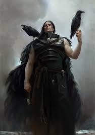

Corvus Corax
O Primarca da XIX Legião, os Raven Guard, é o mestre da furtividade, da sabotagem e da libertação. Corvus Corax, conhecido como o "Senhor das Sombras" ou "O Corvo", é uma figura de melancolia profunda, mas de uma determinação implacável em punir a tirania.
Quem é Corax?
Corvus caiu em Lycaeus, a lua gelada e mineradora do planeta Deliverance. Ele foi encontrado e criado por escravos e prisioneiros que viviam sob o jugo brutal de feitores tecnológicos. Desde cedo, ele foi treinado por seus "pais" adotivos nas artes da ocultação, do combate urbano e da resistência. Ele liderou uma revolução em larga escala, usando táticas de sabotagem e terror psicológico para derrubar os tiranos de Deliverance. Quando o Imperador chegou, Corvus viu nele um libertador maior, mas sempre carregou o peso de ser um "libertador" que servia a um Império que também exercia um controle absoluto.
Características e Personalidade
Invisibilidade Metafísica: Corvus possui uma habilidade psíquica passiva única chamada "Shadow-step" (Passo de Sombra). Ele pode se tornar imperceptível aos olhos e sentidos das pessoas, mesmo estando bem na frente delas.
O Libertador Melancólico: Ele acredita na liberdade, mas entende que a ordem é necessária. Isso o torna um personagem pensativo, sombrio e, às vezes, isolado de seus irmãos.
Gênio da Guerrilha: Diferente de Guilliman (logística) ou Lion (estratégia clássica), Corax foca em ataques de precisão. Ele prefere destruir um centro de comando em silêncio do que marchar com um exército inteiro.
Aparência: Corvus é extremamente pálido, com cabelos negros como as asas de um corvo e olhos totalmente negros, lembrando uma figura saída de um conto de terror gótico.
Grandes Feitos
A Libertação de Deliverance: Com armas improvisadas e táticas de mestre, ele derrotou os exércitos tecnologicamente superiores de Lycaeus. Ele mudou o nome da lua para Deliverance e transformou a cidadela dos opressores, a Ravenspire, em sua base de operações.
Isstvan V: Corax estava presente no desastroso massacre onde as legiões traidoras quase aniquilaram os leais. Ele lutou com uma fúria terrível, quase matando Lorgar antes de ser interrompido por Curze. Corvus foi um dos poucos Primarcas a escapar, liderando os sobreviventes de sua legião em uma campanha de resistência desesperada por 98 dias atrás das linhas inimigas.
O Projeto Raptors: Desesperado para reconstruir sua legião após Isstvan, Corax recebeu do Imperador segredos da biotecnologia original dos Primarcas. Ele conseguiu criar novos Space Marines em tempo recorde (os Raptors). No entanto, agentes da Alpha Legion sabotaram o processo com mutagênicos do Caos, resultando em monstros deformados. Corax, por amor e dever, teve que sacrificar pessoalmente seus filhos mutantes, um ato que despedaçou sua sanidade.
O Cerco de Terra Embora sua legião estivesse em frangalhos, Corax e seus remanescentes atuaram nas sombras, interrompendo as linhas de suprimento de Horus e realizando ataques rápidos que atrasaram o avanço dos traidores, dando tempo precioso para as defesas de Terra.
Atualmente: Após a Heresia, consumido pela culpa pelas mutações de seus filhos, Corax se trancou em sua torre por um ano. Ele saiu apenas para partir em direção ao Olho do Terror, jurando caçar todos os Primarcas traidores.
Estilo de Combate
- Infiltração e assassinato
- Velocidade e precisão cirúrgica